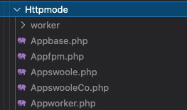
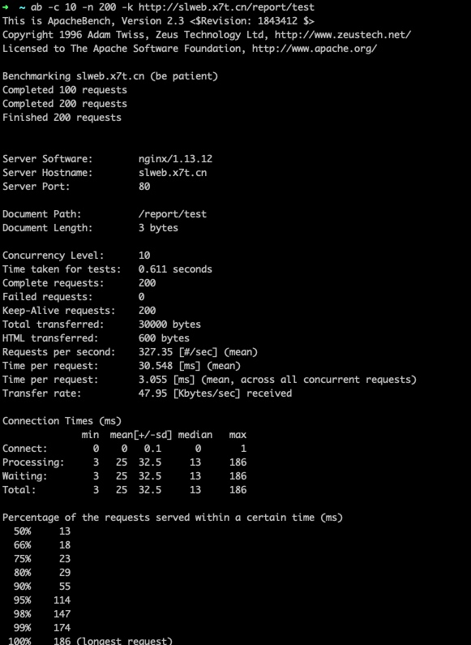
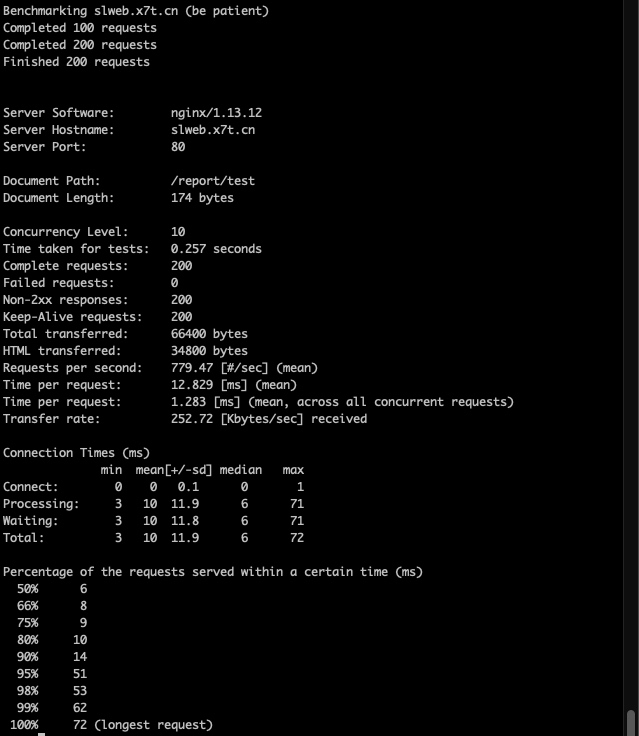
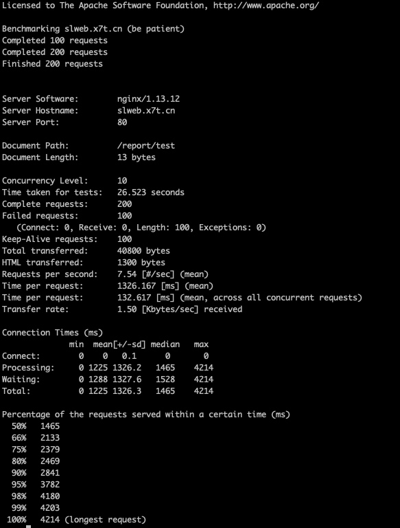

接口测试，我们一般会使用ab、wrk等工具。公司培训了一下php服务端人员，故记录一下。
ab命令详解
-n 即requests，用于指定压力测试总共的执行次数。
-c 即concurrency，用于指定的并发数。
-t 即timelimit，等待响应的最大时间(单位：秒)。
-b 即windowsize，TCP发送/接收的缓冲大小(单位：字节)。
-p 即postfile，发送POST请求时需要上传的文件，此外还必须设置-T参数。
-u 即putfile，发送PUT请求时需要上传的文件，此外还必须设置-T参数。
-T 即content-type，用于设置Content-Type请求头信息，例如：application/x-www-form-urlencoded，默认值为text/plain。
-v 即verbosity，指定打印帮助信息的冗余级别。
-w 以HTML表格形式打印结果。
-i 使用HEAD请求代替GET请求。
-x 插入字符串作为table标签的属性。
-y 插入字符串作为tr标签的属性。
-z 插入字符串作为td标签的属性。
-C 添加cookie信息，例如："Apache=1234"(可以重复该参数选项以添加多个)。
-H 添加任意的请求头，例如："Accept-Encoding: gzip"，请求头将会添加在现有的多个请求头之后(可以重复该参数选项以添加多个)。
-A 添加一个基本的网络认证信息，用户名和密码之间用英文冒号隔开。
-P 添加一个基本的代理认证信息，用户名和密码之间用英文冒号隔开。
-X 指定使用的和端口号，例如:"126.10.10.3:88"。
-V 打印版本号并退出。
-k 使用HTTP的KeepAlive特性。
-d 不显示百分比。
-S 不显示预估和警告信息。
-g 输出结果信息到gnuplot格式的文件中。
-e 输出结果信息到CSV格式的文件中。
-r 指定接收到错误信息时不退出程序。
-h 显示用法信息，其实就是ab -help。
模拟并发请求100次，总共请求10000次
命令模板：
ab -c 100 -n 10000 待测试网站（建议完整路径）
内容解释：
Server Software: nginx/1.10.2 (服务器软件名称及版本信息)
Server Hostname: 192.168.1.106(服务器主机名)
Server Port: 80 (服务器端口)
Document Path: /index1.html. (供测试的URL路径)
Document Length: 3721 bytes (供测试的URL返回的文档大小)
Concurrency Level: 1000 (并发数)
Time taken for tests: 2.327 seconds (压力测试消耗的总时间)
Complete requests: 5000 (的总次数)
Failed requests: 688 (失败的请求数)
Write errors: 0 (网络连接写入错误数)
Total transferred: 17402975 bytes (传输的总数据量)
HTML transferred: 16275725 bytes (HTML文档的总数据量)
Requests per second: 2148.98 [#/sec] (mean) (平均每秒的请求数) 这个是非常重要的参数数值，服务器的吞吐量
Time per request: 465.338 [ms] (mean) (所有并发用户(这里是1000)都请求一次的平均时间)
Time request: 0.247 [ms] (mean, across all concurrent requests) (单个用户请求一次的平均时间)
Transfer rate: 7304.41 [Kbytes/sec] received 每秒获取的数据长度 (传输速率，单位：KB/s)
模式的测试

php-fpm、workerman http、swoole http、swoole协程http, 主要围绕这几种来展开
swoole模式

workerman模式

php-fpm模式

总结
这里可以查看得知php-fpm进程每次要ast一下代码过程会减慢速度，简单业务的情况下，workerman会更快一些。